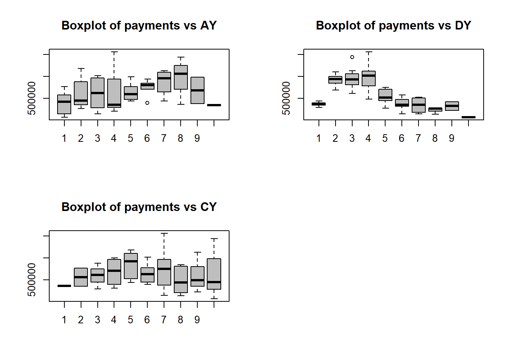
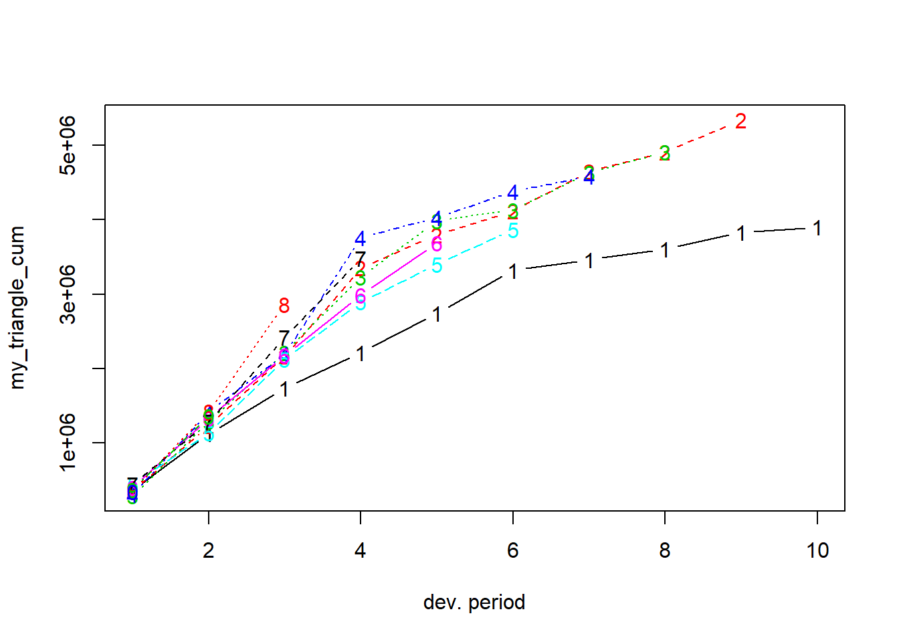
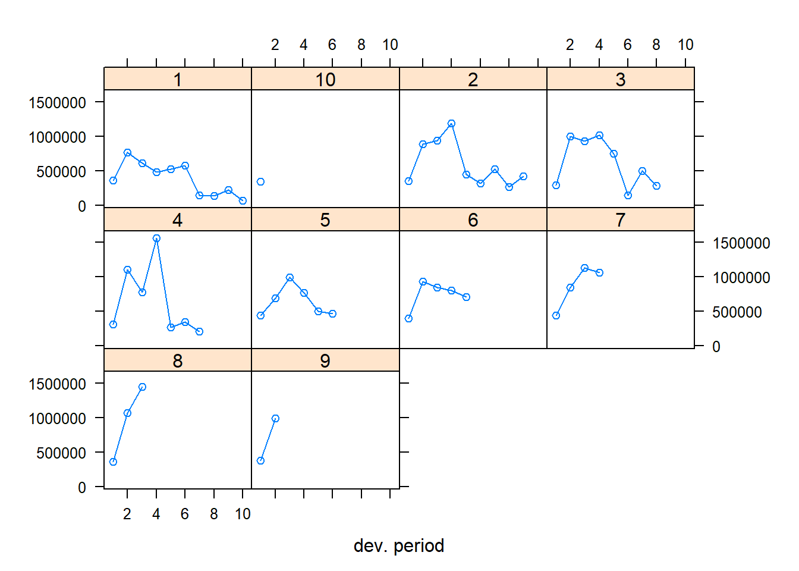
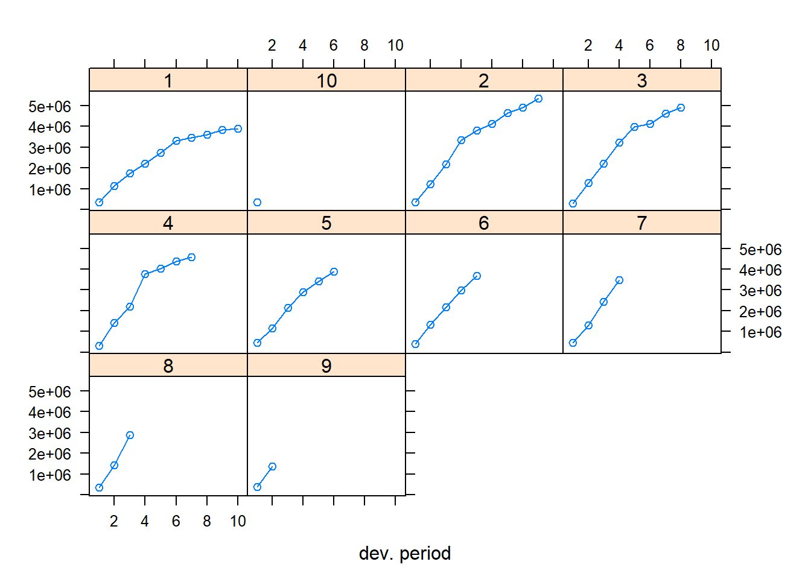

7 Import a run-off triangle
7.1 Using scan
You can load a run-off triangle in many different ways. Here is a first strategy, using the scan() function in R.
Xij <- scan(n=55)
357848 766940 610542 482940 527326 574398 146342 139950 227229 67948
352118 884021 933894 1183289 445745 320996 527804 266172 425046
290507 1001799 926219 1016654 750816 146923 495992 280405
310608 1108250 776189 1562400 272482 352053 206286
443160 693190 991983 769488 504851 470639
396132 937085 847498 805037 705960
440832 847631 1131398 1063269
359480 1061648 1443370
376686 986608
344014Exercise:
- verify the structure of object
Xij. What happened?
You will now reshape the flat vector Xij into a data frame that can be used for claims reserving with GLMs.
n <- length(Xij)
TT <- trunc(sqrt(2*n))
# row.nrs
i <- rep(1:TT, TT:1)
# col.nrs
j <- sequence(TT:1)
# calendar.nrs
c <- i+j-1
# as.factor
i <- as.factor(i)
j <- as.factor(j)
c <- as.factor(c)
# combine into a data frame
my_triangle_data <- data.frame(Xij, i, j, c)Exercise:
- verify the structure of the resulting data frame
- inspect the first 10 rows using
head.
You now prepare some first visual inspections of the data stored in my_triangle_data.
par(mfrow = c(2, 2))
boxplot(Xij ~ i, col = "grey", main = "Boxplot of payments vs AY")
boxplot(Xij ~ j, col = "grey", main = "Boxplot of payments vs DY")
boxplot(Xij ~ c, col = "grey", main = "Boxplot of payments vs CY")
par(mfrow = c(1, 1))
7.2 Using the chainladder package
The ChainLadder package is a well-developed and highly useful package for claims reserving in R. Among others the package brings functions covering:
- Mack chain-ladder, Munich chain-ladder and bootstrap models
- General multivariate chain ladder-models
- Loss development factor fitting and Cape Cod models
- Generalized linear models
- One year claims development result functions
- Utility functions to:
- convert tables into triangles and triangles into tables
- convert cumulative into incremental and incremental into cumulative triangles
- visualise triangles.
You’ll now load the triangle introduced above with the ChainLadder package. Here is how this works.
path <- file.path("C:/Users/u0043788/Dropbox/Risk modelling course Ljubljana/Bookdown/data")
path.triangle <- file.path(path, "TaylorAshe.txt")
my_triangle_data_set <- read.table(path.triangle, header = TRUE, sep="\t")Using the as.triangle function from the ChainLadder package you can reshape the data frame into a ‘triangle’.
library(ChainLadder)## Registered S3 methods overwritten by 'ggplot2':
## method from
## [.quosures rlang
## c.quosures rlang
## print.quosures rlang## Registered S3 method overwritten by 'dplyr':
## method from
## as.data.frame.tbl_df tibble##
## Welcome to ChainLadder version 0.2.9
##
## Type vignette('ChainLadder', package='ChainLadder') to access
## the overall package documentation.
##
## See demo(package='ChainLadder') for a list of demos.
##
## More information is available on the ChainLadder project web-site:
## https://github.com/mages/ChainLadder
##
## To suppress this message use:
## suppressPackageStartupMessages(library(ChainLadder))# prepare triangle
my_triangle <- as.triangle(my_triangle_data_set, origin = "NumAY", dev = "NumDY", value = "Paym")
my_triangle## NumDY
## NumAY 1 2 3 4 5 6 7 8 9
## 1 357848 766940 610542 482940 527326 574398 146342 139950 227229
## 2 352118 884021 933894 1183289 445745 320996 527804 266172 425046
## 3 290507 1001799 926219 1016654 750816 146923 495992 280405 NA
## 4 310608 1108250 776189 1562400 272482 352053 206286 NA NA
## 5 443160 693190 991983 769488 504851 470639 NA NA NA
## 6 396132 937085 847498 805037 705960 NA NA NA NA
## 7 440832 847631 1131398 1063269 NA NA NA NA NA
## 8 359480 1061648 1443370 NA NA NA NA NA NA
## 9 376686 986608 NA NA NA NA NA NA NA
## 10 344014 NA NA NA NA NA NA NA NA
## NumDY
## NumAY 10
## 1 67948
## 2 NA
## 3 NA
## 4 NA
## 5 NA
## 6 NA
## 7 NA
## 8 NA
## 9 NA
## 10 NAExercise:
- interpret the arguments of the function
as.triangle - what is the structure of the R object
my_triangle?
Here is an illustration of some useful functions from the package. Can you figure out what they do?
my_triangle_cum <- incr2cum(my_triangle)
my_triangle_cum## NumDY
## NumAY 1 2 3 4 5 6 7 8
## 1 357848 1124788 1735330 2218270 2745596 3319994 3466336 3606286
## 2 352118 1236139 2170033 3353322 3799067 4120063 4647867 4914039
## 3 290507 1292306 2218525 3235179 3985995 4132918 4628910 4909315
## 4 310608 1418858 2195047 3757447 4029929 4381982 4588268 NA
## 5 443160 1136350 2128333 2897821 3402672 3873311 NA NA
## 6 396132 1333217 2180715 2985752 3691712 NA NA NA
## 7 440832 1288463 2419861 3483130 NA NA NA NA
## 8 359480 1421128 2864498 NA NA NA NA NA
## 9 376686 1363294 NA NA NA NA NA NA
## 10 344014 NA NA NA NA NA NA NA
## NumDY
## NumAY 9 10
## 1 3833515 3901463
## 2 5339085 NA
## 3 NA NA
## 4 NA NA
## 5 NA NA
## 6 NA NA
## 7 NA NA
## 8 NA NA
## 9 NA NA
## 10 NA NAplot(my_triangle)
plot(my_triangle_cum)
plot(my_triangle, lattice = TRUE)
plot(my_triangle_cum, lattice = TRUE)
getLatestCumulative(my_triangle_cum)## 1 2 3 4 5 6 7 8 9
## 3901463 5339085 4909315 4588268 3873311 3691712 3483130 2864498 1363294
## 10
## 344014
## attr(,"latestcol")
## 1 2 3 4 5 6 7 8 9 10
## 10 9 8 7 6 5 4 3 2 1
## attr(,"rowsname")
## [1] "NumAY"
## attr(,"colnames")
## [1] "10" "9" "8" "7" "6" "5" "4" "3" "2" "1"
## attr(,"colsname")
## [1] "NumDY"